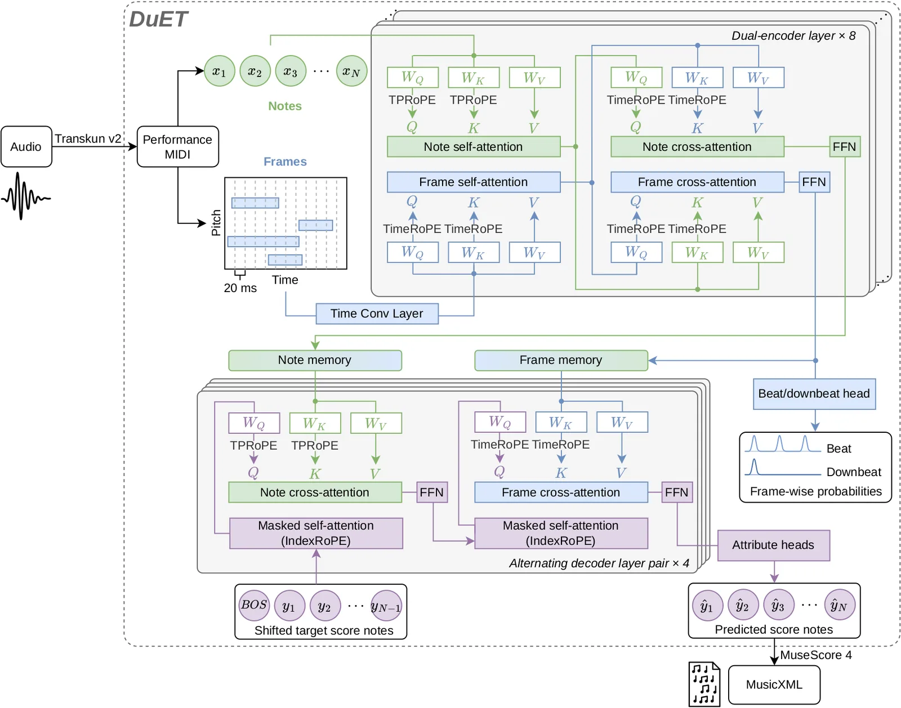
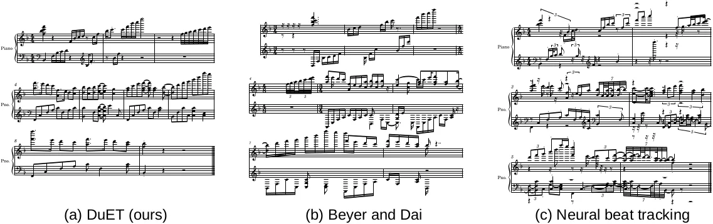
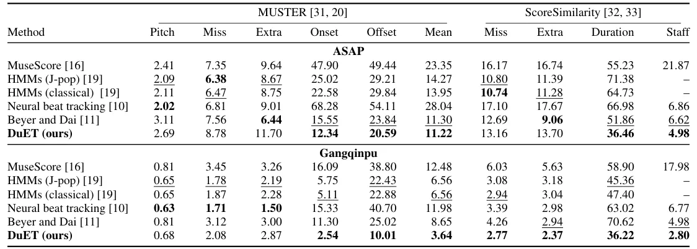
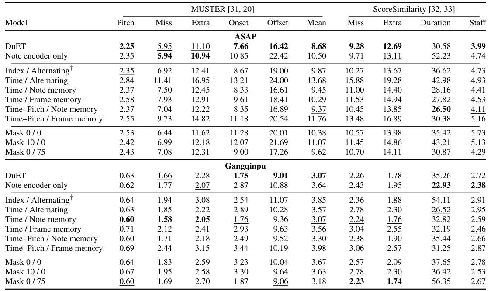

O Desafio da Transcrição de Partituras Automática
A transcrição automática de piano (Automatic Piano Transcription - APT) evoluiu significativamente, mas ainda enfrenta um gargalo crítico: converter uma performance expressiva em uma partitura notada (score) é muito mais complexo do que gerar um arquivo MIDI. Enquanto o MIDI captura o que foi tocado (notas, durações, velocidades), a partitura exige interpretação estrutural. Os autores Wei Zeng e Ye Wang, da National University of Singapore, apresentam o DuET, um modelo que aborda especificamente a etapa PM2S (Performance MIDI-to-Score). O problema central é que o tempo de performance é fluido e expressivo, enquanto o tempo da partitura é rígido e métrico. Mapear um para o outro requer entender não apenas a sequência de notas, mas também o pulso (beat) e a métrica subjacentes.
Existem três desafios principais identificados no paper. Primeiro, a discrepância de granularidade: atributos da partitura (como início e duração da nota) estão associados a eventos de nota individuais, enquanto o pulso musical ocorre em uma grade temporal de frames, muitos dos quais não contêm onsets de notas. Segundo, a representação de posições relativas: em uma sequência unidimensional de notas, a distância entre índices não reflete necessariamente a separação temporal real, especialmente quando notas são simultâneas ou separadas por pausas longas. Terceiro, a escassez de dados para música popular: a maioria dos modelos foi treinada apenas em repertório clássico (dataset ASAP), ignorando a demanda prática por transcrições de música popular, onde a partitura oficial é frequentemente indisponível.
Para contornar esses problemas, os autores propõem uma abordagem dual. Em vez de tratar a transcrição como um problema puramente sequencial, o DuET integra a previsão de notas com o rastreamento de pulso (beat tracking) em nível de frame. Isso permite que o modelo use o contexto métrico para resolver ambiguidades no timing das notas. Além disso, eles introduzem novos mecanismos de posicionamento temporal que respeitam a natureza bidimensional do tempo e do pitch no piano, algo que codificações tradicionais de posição em Transformers não fazem adequadamente.

Arquitetura DuET: Dois Codificadores, Uma Partitura
O DuET é um Transformer de dois codificadores (Dual-Encoder). A entrada é um trecho de Performance MIDI (PMIDI), que consiste em uma sequência de notas X ordenadas pelo tempo de onset. Cada nota x_i contém pitch (p_i), tempo de início (t_i), duração (d_i) e velocidade (v_i). Paralelamente, a partir das notas e mensagens de pedal sustain, é construída uma representação de piano-roll R, dividida em frames temporais de 20ms (∆=0.02s). Cada frame r_j indica quais pitches estão ativos e o estado do pedal naquele instante.
O primeiro codificador, o Note Encoder, processa a sequência de notas X. Ele modela as relações individuais entre as notas, capturando dependências locais e globais na sequência de eventos musicais. O segundo codificador, o Frame Encoder, processa a representação de piano-roll R. Sua função é capturar o contexto temporal contínuo, incluindo os espaços vazios entre notas onde os beats (pulso) e downbeats (primeiro tempo do compasso) ocorrem. Essa separação é crucial porque os atributos da partitura final (como o compasso e a divisão rítmica) dependem de uma estrutura temporal regular que não é evidente apenas na sequência discreta de notas.
A inovação arquitetônica chave reside na conexão entre esses dois ramos. Os autores utilizam atenção cruzada bidirecional (bidirectional cross-attention) entre o Note Encoder e o Frame Encoder. Isso permite que as informações sobre a estrutura métrica (do frame) fluam para a interpretação das notas, e que as características das notas influenciem a identificação do pulso. Em seguida, um decoder autoregressivo prediz os atributos da partitura para cada nota de entrada. O decoder alterna sua atenção entre a memória do codificador de notas e a do codificador de frames, integrando assim a identidade da nota com seu contexto métrico.
Formatação da Tarefa e Saída Alinhada
A transcrição PM2S no DuET é formulada como um mapeamento um-para-um entre as notas de entrada X e os registros de saída Y. Isso significa que o modelo não insere nem remove notas; ele reatribui atributos musicais às notas existentes. Para cada nota de entrada, o modelo prediz um conjunto complexo de atributos de score, conforme detalhado na Tabela 1 do paper. Estes incluem: índice do compasso (b_i), parte inteira e fracionária do onset no compasso (q_i, f_i), duração notada (l_i), designação de pentagrama (s_i, superior ou inferior), duração do compasso (L_i), numeração e denominação da métrica (mnum_i, mden_i), assinatura de clave (k_i), voz (u_i) e indicador de nota de graça (g_i).
Os valores de tempo na partitura (onset e duração) são medidos em unidades de semínima (quarter-note units), normalizados pelo andamento. A fração do onset (f_i) e a duração (l_i) são discretizadas em vocabulários finitos derivados dos dados de treino. Isso transforma o problema de regressão contínua em um problema de classificação, mais estável para redes neurais. A assinatura de clave é codificada como um número inteiro positivo (sustenidos) ou negativo (bemóis), e a métrica é predita como pares de números inteiros.
Simultaneamente, o modelo aprende uma tarefa auxiliar de rastreamento de beat e downbeat em nível de frame. Para cada frame j, o modelo prediz um vetor de probabilidade π_j sobre três classes: não-beat (0), beat regular (1) ou downbeat (2). Essa supervisão auxiliar atua como um regulador estrutural, forçando o Frame Encoder a aprender uma representação temporal alinhada com a métrica musical, o que indiretamente melhora a precisão do Note Encoder ao fornecer um mapa rítmico claro.
TimeRoPE e TPRoPE: Posicionamento Temporal Explícito
Um dos contributos teóricos mais significativos do DuET é o tratamento do posicionamento. Transformers padrão usam posições absolutas ou relativas baseadas no índice da sequência. No entanto, no contexto musical, a distância entre duas notas na sequência (índice i e j) não corresponde linearmente à distância temporal real, especialmente em passagens rubato ou com notas simultâneas. Usar apenas a ordem da sequência perde a informação de quanto tempo passou entre os eventos.
Para resolver isso, os autores introduzem o TimeRoPE (Time Rotary Positional Encoding) e o TPRoPE (Time-Pitch Rotary Positional Encoding). O TimeRoPE incorpora o tempo absoluto ou relativo da performance no embedding da nota, permitindo que o modelo distinga entre notas que estão próximas na sequência mas distantes no tempo. O TPRoPE vai além, codificando explicitamente as relações relativas de tempo E pitch. Isso é feito modificando os vetores de query e key no mecanismo de attention para incluir rotações baseadas na diferença de tempo e na diferença de pitch entre as notas.
Essa abordagem permite que o modelo entenda que duas notas separadas por uma oitava têm uma relação específica, independentemente de quantas outras notas existam entre elas na sequência. O TPRoPE estabelece uma referência compartilhada de tempo de performance, alinhando a representação interna do modelo com a física do piano (espaço tempo-pitch bidimensional), em vez de uma linha unidimensional abstrata.

Resultados Quantitativos e Ablações
A avaliação do DuET foi realizada em dois datasets: ASAP (música clássica) e Gangqinpu (música popular chinesa, criado pelos autores). A métrica principal é o MUSTER mean error, que mede a diferença entre a partitura predita e a ground truth em termos de timing e estrutura. No dataset Gangqinpu, o DuET reduziu o erro MUSTER de 6.56% (melhor baseline anterior, Beyer e Dai) para 3.64%, uma melhoria substancial de quase 45%. No ASAP, a melhoria foi mais modesta, caindo de 11.30% para 11.22%, mas ainda assim sendo a melhor performance registrada.
Analisando os componentes do erro (Tabela 2), o DuET destaca-se na precisão de onset e offset (timing) e na duração notada. No Gangqinpu, o erro de onset caiu drasticamente para 2.54%, comparado a 11.30% do baseline. Isso confirma que a integração do contexto de beat (frame-level) ajuda a ancorar as notas expressivas em seus tempos rítmicos corretos. No entanto, o DuET apresenta erros mais altos em missing notes (notas faltantes) e extra notes (notas extras) no ASAP, sugerindo que o modelo pode ter dificuldade em lidar com ruídos ou ambiguidades extremas na performance clássica em comparação com modelos mais simples.
As ablações (Tabela 3) revelam a contribuição de cada componente. Remover o Frame Encoder (usando apenas o Note Encoder) aumenta significativamente o erro de timing, provando que o contexto métrico é essencial. O uso de TimeRoPE/TPRoPE também melhora consistentemente os resultados em comparação com codificações baseadas apenas em índice ou tempo absoluto. A estratégia de decoder com memória alternada (alternating memory access) mostrou-se superior ao acesso fixo, permitindo que o modelo ajuste dinamicamente sua atenção entre a estrutura da nota e o pulso do compasso. Uma limitação importante é que o DuET não realiza inserção ou remoção de notas. Se o MIDI de entrada tiver notas erradas, comuns em transcrições audio-to-MIDI anteriores, o DuET propagará esses erros para a partitura. Ele apenas reinterpreta atributos, portanto, a qualidade final depende fortemente da precisão do estágio anterior.

Pipeline Completo e Limitações
O paper descreve um pipeline completo de Audio-to-Score (A2S), mas foca metodologicamente apenas na etapa PM2S. O pipeline utiliza o Transkun v2 para converter áudio em Performance MIDI (incluindo expressão e pedal) e o MuseScore 4 para formatar a saída do DuET em MusicXML. O DuET prediz os atributos estruturais, mas decisões de notação final, como spelling de pitch (se uma nota é F# ou Gb) e feixes de notas (beaming), são delegadas ao MuseScore. Isso limita a capacidade do DuET de corrigir erros de notação musicológica, dependendo de um motor de notação externo.
Os resultados mostram que o DuET é particularmente eficaz em contextos onde a estrutura métrica é clara, como na música popular do dataset Gangqinpu. No entanto, no repertório clássico do ASAP, onde o rubato é mais livre e a métrica pode ser mais fluida, a vantagem é menor. Os autores admitem que a precisão na detecção de downbeats em contextos complexos ainda pode ser melhorada. Além disso, a generalização para outros instrumentos ou gêneros musicais não foi testada, limitando o escopo atual da contribuição.
Outra limitação é a dependência de dados de alta qualidade. O dataset Gangqinpu, embora novo e relevante, é específico de um gênero. A performance no ASAP, embora competitiva, não supera drasticamente os métodos anteriores em todas as métricas, especialmente na detecção de notas ausentes. Isso sugere que, para alguns aspectos da transcrição, a arquitetura dual pode não ser suficiente sem ajustes específicos para a complexidade do repertório clássico.

Conclusão
O DuET representa um avanço pragmático na transcrição automática de piano, ao reconhecer que a transcrição de partituras não é apenas um problema de classificação de notas, mas de alinhamento temporal com uma estrutura métrica subjacente. Ao combinar codificadores de notas e frames com atenção cruzada e posicionamento temporal explícito (TimeRoPE/TPRoPE), o modelo consegue gerar partituras com timing mais preciso, especialmente em gêneros com métrica definida.
A contribuição principal não é uma revolução na acurácia absoluta em todos os cenários, mas a demonstração de que o contexto de beat (frame-level) é um regulador essencial para a precisão do timing (note-level). Para desenvolvedores e pesquisadores em MIR, o DuET oferece uma arquitetura modular que pode ser adaptada para outros instrumentos, desde que a relação entre evento musical e estrutura rítmica seja modelada explicitamente. O código e os pesos estão disponíveis, permitindo a reprodução e extensão desta abordagem dual.
O que fica
- DuET usa dois codificadores (notas e frames) conectados por atenção cruzada para unir timing expressivo e estrutura métrica.
- TimeRoPE e TPRoPE codificam relações temporais e de pitch, resolvendo a ambiguidade de sequências unidimensionais.
- Reduzu MUSTER mean error em 45% no dataset Gangqinpu, mas manteve erros de notas faltantes/extras no ASAP.
- O modelo não insere ou remove notas; a formatação final depende do MuseScore 4, limitando a generalização.
Paper original: DuET: Note-Frame Dual Encoding for Piano Performance-to-Score Transcription
Comentários
Nenhum comentário ainda. Seja o primeiro.